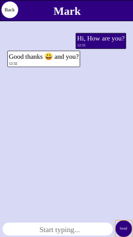
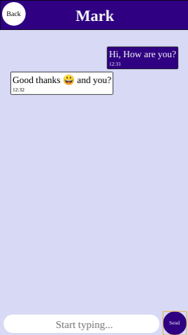

Hi, I'm Henry
I'm a web developer.
I build full-stack responsive websites and web/hybrid apps.
Need a website/webapp
or looking to hire

I'm a self taught programmer with experience in both front and back-end development. I have worked on projects ranging from intelligent naming & classification software to voice recognition to full-stack mobile applications with back end server and databases.
My greatest asset is my believe that there is always a way to make it work. I am always looking to learn something new to improve my skills or make my project work.
The Stack I use:
Front end:
JavaScript, Angular/TypeSctipt, PHP, Meteor.js, HTML/CSS, Bootstrap, SCSS
Back end:
Node.js, Express.js, Socket.io, Java, Apache2, Lamp, Tomcat
Database:
Postgres, Mongo, MySql
Deployment:
Heroku, Github
Other:
RestAPIs, Apache Cordova, Git, Npm, Linux
Rhino Assets Mobile App (Front and back end fuel logging app)
The client requested a cross platform mobile app for fuel supply logging and management.
Features Include:
- User Login
- Asset add and remove
- Usage Updating
- Reporting On Usage
Main Tech Used:
Html, Css, JavaScript, Node.js, Tomcat Server, PostgreSQL, and Heroku for hosting.


Chat App
This is a real time functioning chat app that can be used stand alone or as a base to build a private messaging app.
Main Tech Used:
Html, SCSS, Angular 6, TypeSctipt, JavaScript, Node.js, Socket.io
 

QuickToDo's
A simple to do list for everyone on the local network
Features Include:
- User Login
- Toggle between private and public
- Toggle between done and not
Main Tech Used:
Html, SCSS, JavaScript, Node.js, Meteor.js, MongoDB

Electronic Cost Consulting (Intelligent Document Processing)
Ecc Has been one of my main projects over the last 2 years.
The Idea came from seeing a how law firms work out their bills. It takes a trained somewhere between an hour to a couple of days to summarise the contents of a legal file to which can have upwards of a thousand pages. The idea was to automate the whole process.
The project steps after receiving a scanned file are:
- OCR all the pages
- Recognition start and end pages of all documents in files
- Extracting data from documents depending on their type. Including, names, dates, word counts etc.
- Recognising if documents contains certain rubber stamps to cut these out and rotate them for people to check.
- After a quick summary check of unrecognisable pages by a person to convert all data into a bill ready to present to a client.
Main Tech Used:
Java, Pdfbox, Apache Poi, Google Drive API, Open CV
Mia (Virtual Assistant) (Personal Project)
The idea came from the novelty of electronic assistants like Alexa/Bixby/Siri/Google Assistant etc. I always thought it was a great project but the one big feature that was always a bit of a challenge is the adding of new skills and tasks. The other is that most of them tend to only work with an internet connection and that most data is processed elsewhere.
What I ended up building was a voice assistant working on a computer and can function without an internet connection.
It has most of the features of the standard voice assistants but have added features such as:
-Quick adding of new skills.
-Wake word disabling for working in quiet areas and changing of wake words.
-Different language by asking.
-An ability to show the web cam a picture and asking for translation or meaning.
-Text communication via Facebook messenger.
Main Tech Used:
Java, Shell script, Sphinx4j, Mary text to speech
Contact
If you have any questions, queries or idea for a project please fill out below or send an email to heinrichk91@gmail.com